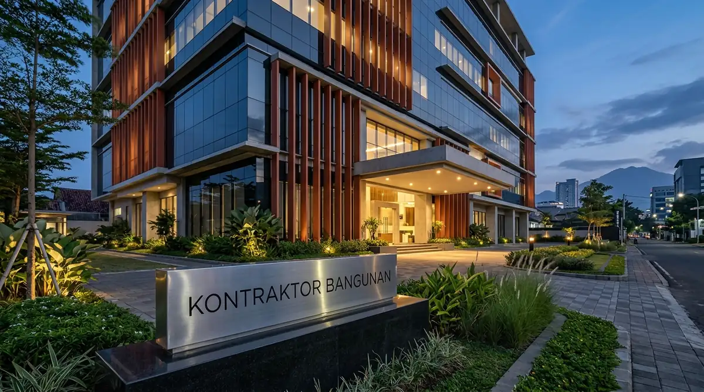

Tantangan Geoteknik & Rekayasa Konstruksi Villa di Malang & Batu
Tantangan utama adalah kemiringan kontur tanah lereng bukit, risiko pergeseran tanah saat musim hujan, dan tingginya kelembapan udara pegunungan.
Membangun di kawasan perbukitan Kota Batu atau lereng Gunung Panderman memerlukan rekayasa sipil yang berbeda total dibandingkan konstruksi di tanah datar. Berdasarkan kajian Geologi dan Mitigasi Bencana Jawa Timur 2025/2026, lebih dari 45% kerusakan struktur bangunan di area lereng disebabkan oleh kegagalan sistem drainase lereng dan pondasi dangkal yang tergerus air resapan.
Solusi rekayasa Kontraktor Bangunan:
- Dinding Penahan Tanah (Retaining Wall): Dinding beton bertulang masif yang dilengkapi pipa suling-suling (weep holes) dan geotekstil pereduksi tekanan air tanah.
- Pondasi Tiang Pancang / Bored Pile: Meneruskan beban villa ke lapisan batuan keras vulkanik di bawah lapisan tanah bergerak.
- Sistem Teritisan & Insulasi Termal: Desain overstek atap lebar untuk melindungi dinding dari terpaan hujan angin pegunungan serta insulasi penahan dingin di plafon.
Bagaimana Tahapan Membangun Hotel & Villa Komersial di Malang Raya?
Tahapan meliputi analisis kontur topografi (Topographic Survey), perancangan masterplan resort, pembangunan struktur lereng, finishing interior estetik, hingga commissioning.
Alur kerja profesional pembangunan properti perhotelan dan villa:
1. Survei Topografi & Analisis Kontur Lahan
Pemetaan kontur tanah menggunakan drone fotogrametri dan theodolite total station untuk menentukan titik potong tanah (cut and fill) yang paling efisien dan stabil.
2. Masterplanning & Desain Arsitektur Hospitality
Penyusunan tata letak villa mandiri (detached units), lobi resepsionis, clubhouse, restoran, jalan akses kendaraan buggy, dan zonasi lanskap hijau.
3. Konstruksi Struktur Penahan Tanah & Pondasi
Pengecoran retaining wall bertingkat, balok pengikat (ground beam), serta struktur panggung (cantilever slab) yang memberikan ilusi bangunan melayang di atas bukit.
4. Finishing Interior, Fasilitas Infinity Pool & Spa
Pemasangan mozaik kaca kolam renang dengan sistem sirkulasi overflow, sanitair premium, lantai kayu tahan air, serta penataan lampu taman dramatis.

Proses pengecoran dinding penahan tanah (retaining wall) beton bertulang pada proyek villa lereng bukit Batu.
Tabel Komparasi Paket Pembangunan Properti Villa & Resort di Malang Raya
Tabel komparasi menyajikan estimasi biaya per meter persegi, kelengkapan fasilitas, dan potensi okupansi untuk berbagai tipe villa komersial.
| Tipe Properti | Estimasi Biaya Bangun / m² | Fasilitas Unggulan | Target Pasar Wisatawan | Estimasi Durasi Pengerjaan |
|---|---|---|---|---|
| Boutique Villa Standar | Rp4.000.000 – Rp5.200.000 | 2-3 Kamar Tidur, Kolam Renang Standar, Dapur Bersih | Keluarga, Wisatawan Domestik | 4 – 6 Bulan |
| Luxury Cliffside Villa | Rp5.500.000 – Rp7.500.000 | Infinity Pool Kaca, Jacuzzi Hangat, Retaining Wall, Smart Home | Eksekutif, Ekspatriat, Staycation VVIP | 6 – 9 Bulan |
| Eco Resort & Glamping Pods | Rp3.200.000 – Rp4.500.000 | Struktur Rangka Kayu/Baja Ringan, Dinding Bambu Komposit | Backpacker, Pecinta Alam, Gen Z | 3 – 5 Bulan |
| Boutique Hotel (20-40 Kamar) | Rp4.800.000 – Rp6.800.000 | Restoran, Lobi Mewah, Kolam Renang Bersama, Smart Key | Korporat MICE, Rombongan Tour | 9 – 14 Bulan |
- Pasang Pemanas Kolam Renang (Heat Pump System): Suhu udara malam hari di Batu yang dingin (16-19°C) membuat fasilitas kolam air hangat menjadi daya tarik nomor satu yang menaikkan tarif sewa harian hingga 40%.
- Rancang Jendela Kaca Sudut (Corner Window): Maksimalkan sudut pandang 180 derajat ke arah lembah atau matahari terbit untuk menciptakan pengalaman menginap tak terlupakan.
- Gunakan Lantai Granit Tekstur Matt / Anti-Slip: Cegah risiko kecelakaan tamu terpeleset di sekitar dek kolam renang dan balkon akibat kabut embun pagi.
Pertanyaan yang Sering Diajukan (FAQ)
Kesimpulan Praktis
Investasi properti villa dan resort di Malang Raya & Batu menjanjikan keuntungan finansial (yield & capital gain) yang sangat tinggi jika dirancang dan dibangun dengan standar kualitas terbaik. Konsultasikan rencana Anda bersama tim spesialis kami.